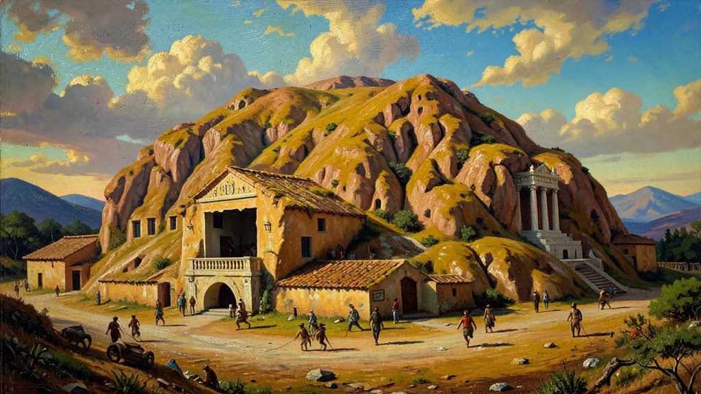
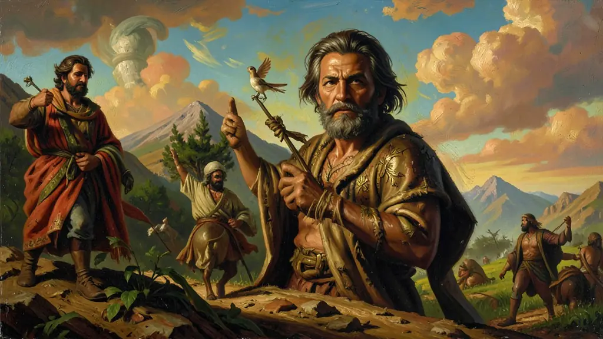
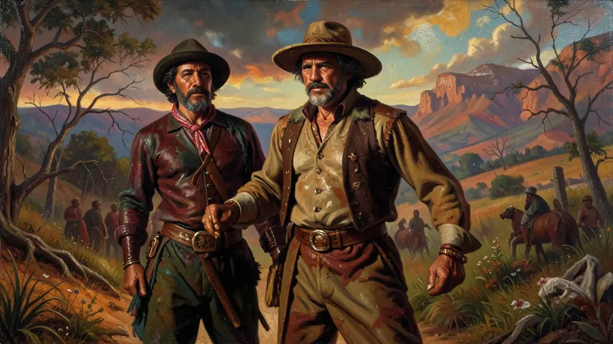

Capítulo 01
1. Canudos: O Monte Santo da Liberdade
Antônio Conselheiro perambulava pelo sertão reconstruindo igrejas e cemitérios. Ele falava de um Deus que protegia o pobre e de um Rei que voltaria para acabar com a seca. Em Canudos, não havia fome e todos trabalhavam em comum. Para o governo, aquilo era um 'Estado dentro do Estado'. A República mandou o exército quatro vezes até que, em 1897, a cidade foi dinamitada e o corpo de Conselheiro decapitado para estudo científico.

Capítulo 02
2. Contestado: A Guerra pela Terra e pelo Céu
Ao contrário de Canudos, o Contestado aconteceu em uma floresta fria. Milhares de trabalhadores da ferrovia foram demitidos e ficaram sem teto. Eles seguiram o monge José Maria em direção às 'Cidades Santas'. A luta durou quatro anos de guerrilha na mata. O exército brasileiro usou fuzis modernos e aeronaves para esmagar camponeses armados de foices e rosários, provando que a República protegia o lucro das empresas antes do povo.

Capítulo 03
3. O Cangaço: A Fúria de Sétimo e Lampião
Lampião, o 'Rei do Cangaço', não era um santo. Ele era um guerreiro cruel que nasceu da falta de leis no Nordeste. Para muitos sertanejos, o cangaceiro era o ' justiceiro' que peitava o coronel e o delegado. Para o governo, eram bandidos que precisavam ser extintos. O cangaço representa o estágio máximo da falência do Estado no interior: onde não há justiça oficial, reina a canastra e o punhal.

Capítulo 04
4. O Messianismo como Resistência Cultural
As populações do interior não entendiam a República (que trazia impostos e burocracia). Elas preferiam o líder místico que prometia a salvação espiritual e a comida no prato. O messianismo brasileiro é uma mistura de catolicismo popular com o sonho sebastianista. Foi a forma que o excluído encontrou para se organizar politicamente em um país que só olhava para o litoral e para a Europa.
Capítulo 05
5. O Massacre Sistemático do Brasil Profundo
Somando Canudos e Contestado, o Brasil foi o país que mais matou seu próprio povo pobre em batalhas campais na América Latina durante o início do século XX. O Exército brasileiro, em vez de defender as fronteiras, foi usado como 'capitão do mato' das elites agrárias. Essa cicatriz histórica de violência estatal contra movimentos populares rurais ainda explica muito do medo e do silêncio no interior do Brasil hoje.
O messianismo no campo brasileiro, com destaque para Canudos e o Contestado, foi uma resposta desesperada das populações sertanejas à exclusão social e ao abandono pelo Estado republicano recém-formado. Segundo Euclides da Cunha, a Guerra de Canudos (1896-1897) revelou o 'choque entre duas civilizações': o Brasil litorâneo e europeizado contra o Brasil profundo, arcaico e místico. Antônio Conselheiro, o líder de Belo Monte, não era apenas um fanático religioso, mas o catalisador de uma comunidade que buscava dignidade e terra fora dos domínios dos coronéis.
A destruição total de Canudos pelo Exército Brasileiro, utilizando as tecnologias militares mais modernas da época, simbolizou a incapacidade da República em lidar com as desigualdades rurais. No sul do país, o movimento do Contestado seguiu padrão similar de liderança messiânica e resistência contra o avanço das estradas de ferro e das grandes empresas madeireiras estrangeiras. Esses movimentos provaram que a fé religiosa era, muitas vezes, a única linguagem disponível para expressar uma revolta política contra a concentração fundiária e a injustiça social.
Para o Enem, o messianismo deve ser analisado como um fenômeno sociopolítico complexo, indissociável da questão agrária e do coronelismo. O aluno deve perceber como a elite republicana criminalizou esses movimentos, rotulando-os como 'monarquistas' ou 'bárbaros' para justificar sua eliminação física. O estudo desses conflitos permite uma reflexão profunda sobre a formação da cidadania no Brasil e as raízes da violência sistemática contra os vulneráveis no campo brasileiro.
Fonte: CUNHA, Euclides da. Os Sertões (Campanha de Canudos). Rio de Janeiro: Francisco Alves, 2012.
Atividades interativas
Questões para fixar
A comunidade de Canudos, liderada por Antônio Conselheiro (1893-1897), foi destruída pelo governo republicano sob a acusação principal de ser:
A Guerra do Contestado (1912-1916) e a Revolta de Canudos têm em comum o fato de serem movimentos messiânicos brasileiros que:
Qual foi o principal motivo que levou ao surgimento do Messianismo no Brasil?
Qual foi o resultado da destruição de Canudos pelo Exército?
Qual foi o contexto histórico que levou ao surgimento do Cangaço?